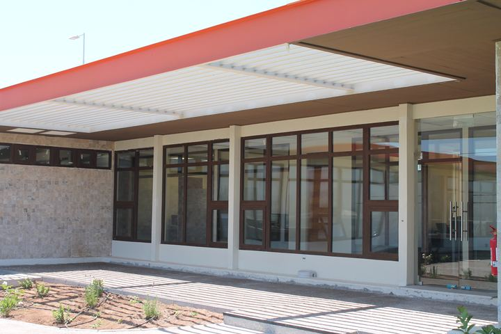
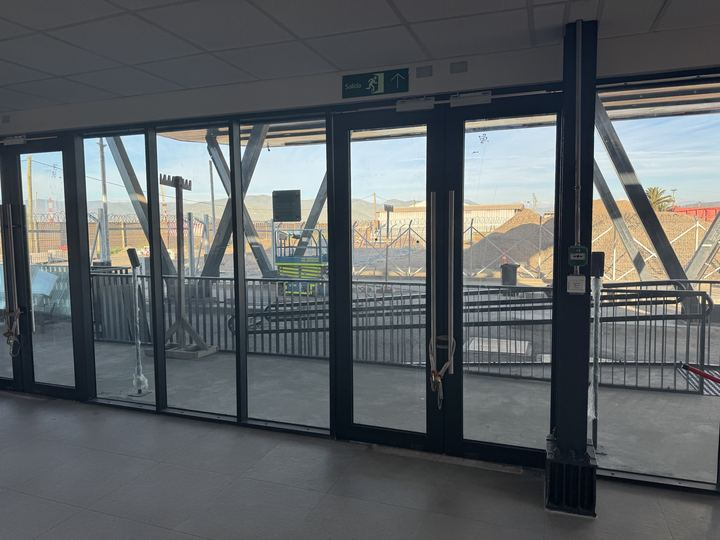
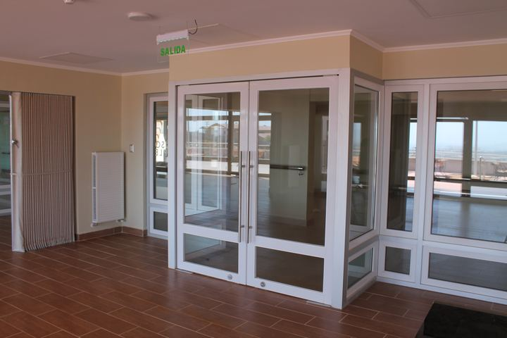
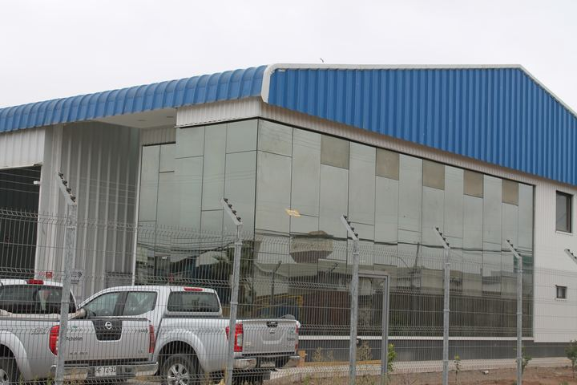
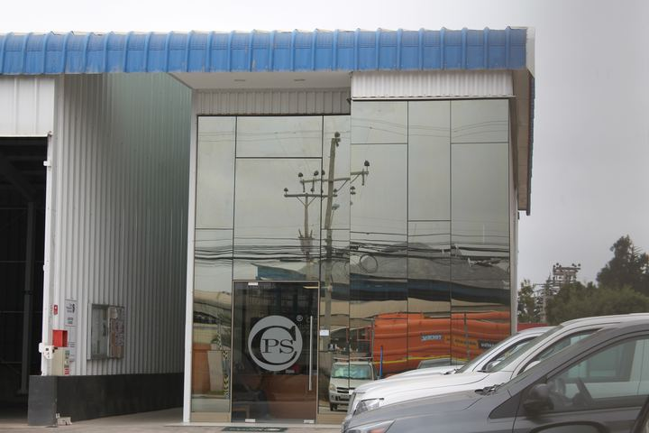
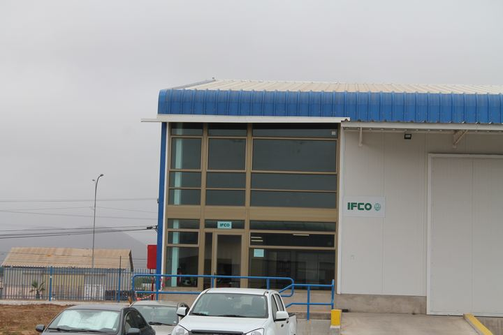
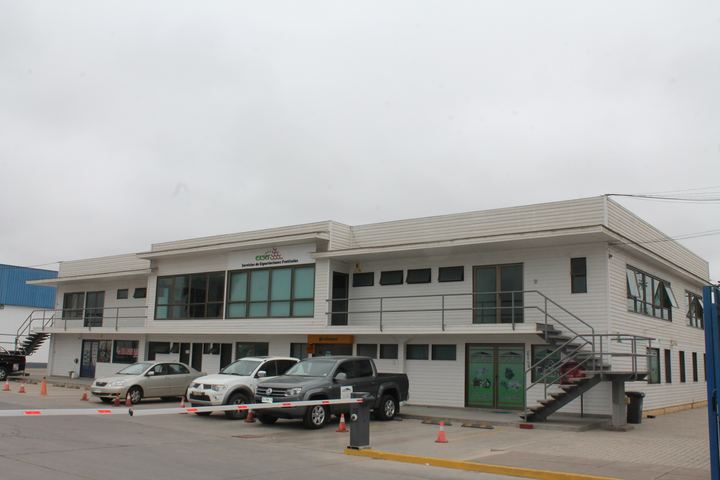
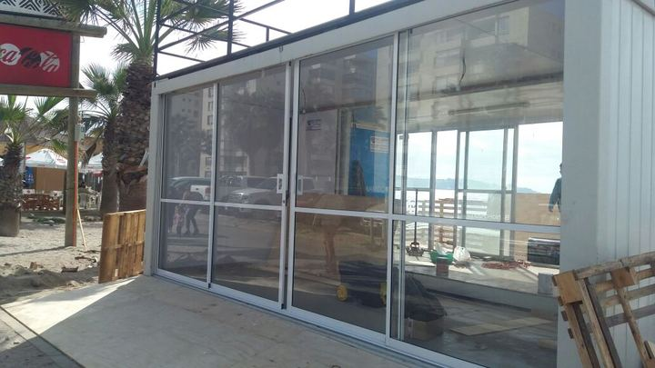
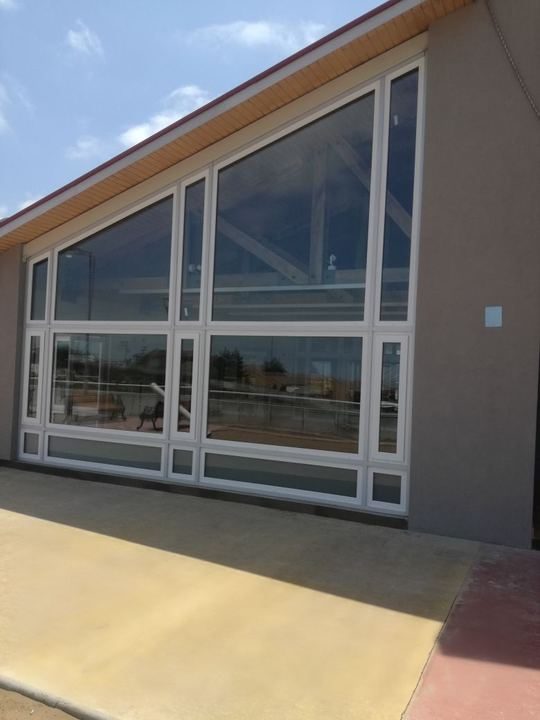
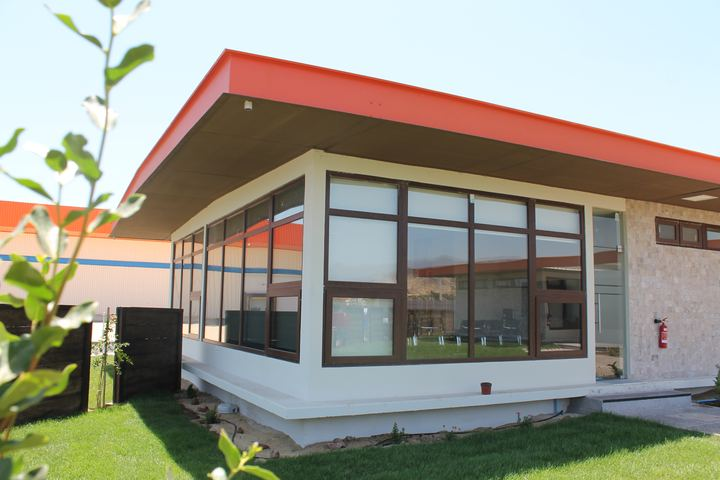

Más vidrio, más luz
El aluminio es tan firme que bastan perfiles delgados para sostener el vidrio. Así queda más superficie vidriada y entra más luz natural.
Fabricamos e instalamos ventanas, puertas, mamparas, ventanales y fachadas de aluminio, hechas a la medida de cada vano. Perfiles delgados, mucha luz y una estructura resistente que dura por años.
El aluminio es tan firme que bastan perfiles delgados para sostener el vidrio. Así queda más superficie vidriada y entra más luz natural.
Permite fabricar paños y correderas de gran tamaño sin deformarse, ideales para livings, terrazas y vistas panorámicas.
Soporta golpes, viento y cambios de temperatura sin torcerse ni pudrirse. Bien instalada, una ventana de aluminio dura muchos años.
Acepta vidrio simple, termopanel, laminado o templado. Con doble vidriado mejora mucho el aislamiento del frío y del ruido.
Se fabrica en distintas terminaciones para combinar con cualquier fachada, desde tonos clásicos hasta negro o imitación madera.
El aluminio se puede reciclar una y otra vez sin perder sus propiedades, por eso es un material amigable con el medio ambiente.
El aluminio sirve tanto para una ventana de baño como para la fachada completa de un edificio. Según el tamaño del vano, el uso y el presupuesto, te recomendamos la línea de perfil adecuada: las líneas más livianas para ventanas residenciales y las más robustas para ventanales grandes, puertas y obras comerciales.




Las hojas se deslizan sobre rieles hacia un lado. No ocupan espacio al abrir y son la opción más usada en ventanales y puertas de terraza.
La hoja gira sobre bisagras laterales, hacia adentro o hacia afuera. Abre todo el vano y cierra de forma más hermética.
Se articula arriba y se abre hacia afuera por la parte inferior. Ventila aunque llueva, ideal para baños, cocinas y oficinas.
No se abre: aprovecha al máximo el vidrio y la vista. Se combina con hojas correderas o proyectantes.
Cada ventana se puede fabricar con el vidrio que mejor calce con su ubicación y uso. Para viviendas recomendamos termopanel, que aísla del frío, del calor y del ruido y reduce la condensación.
Los perfiles vienen anodizados o con pintura electrostática, terminaciones que protegen el aluminio y mantienen su color con los años.
Consúltanos qué colores están disponibles para la línea que elijas.
| Característica | Aluminio | PVC |
|---|---|---|
| Grosor de perfiles | Delgados, más vidrio y luz | Más anchos |
| Tamaño de los paños | Muy grandes | Medianos a grandes |
| Aislamiento térmico | Bueno con termopanel | Excelente |
| Aislamiento acústico | Medio | Alto |
| Colores | Amplia variedad | Blanco y algunos foliados |
| Ideal para | Ventanales, fachadas, oficinas y comercio | Dormitorios y viviendas que buscan máximo abrigo |
Revisamos tu proyecto, medimos cada vano y te recomendamos la línea, la apertura y el vidrio.
Te enviamos un presupuesto detallado por ventana, con línea de perfil, color y tipo de vidrio.
Cortamos, armamos y vidriamos cada ventana en nuestro taller, a la medida exacta.
Instalamos, sellamos y regulamos cada hoja para que corra suave y cierre bien.






El aluminio conduce el frío, por eso recomendamos termopanel en viviendas. Con doble vidriado la ventana aísla mucho mejor y se reduce la condensación. Si buscas el máximo abrigo, también fabricamos ventanas de PVC.
El aluminio no se oxida como el fierro. Con una buena terminación anodizada o pintada y una limpieza periódica para retirar la sal, resiste bien el clima de La Serena y Coquimbo.
Depende del tamaño de la ventana, la apertura y la exposición al viento. Las líneas livianas sirven para ventanas comunes y las más robustas para ventanales, puertas y edificios. Te recomendamos la adecuada al medir.
Sí. Es una de las grandes ventajas del aluminio: permite correderas y paños fijos grandes con perfiles delgados.
Sí, reemplazamos ventanas en casas, departamentos, colegios y edificios. Medimos el vano existente y fabricamos a la medida.
Estamos en Coquimbo y trabajamos en la Región de Coquimbo, con obras en La Serena, Coquimbo, Ovalle y el Valle de Elqui, entre otras.
Cuéntanos las medidas aproximadas y el tipo de ventana que necesitas, y te preparamos una cotización.